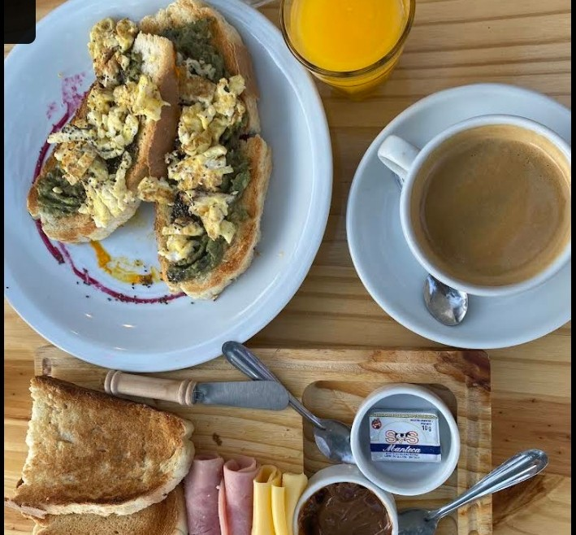
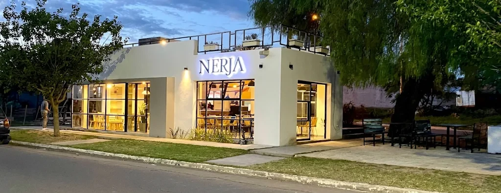
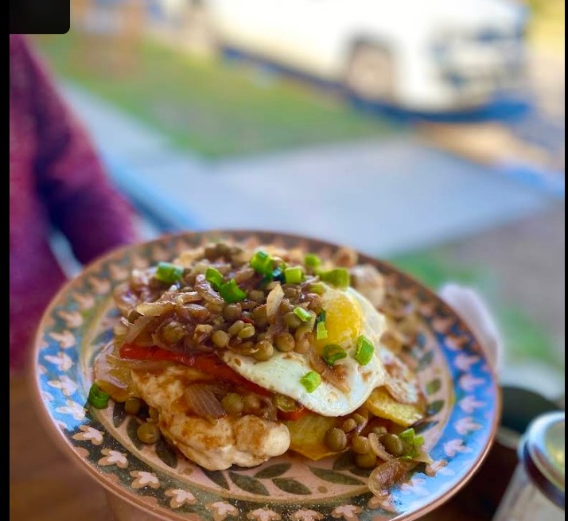
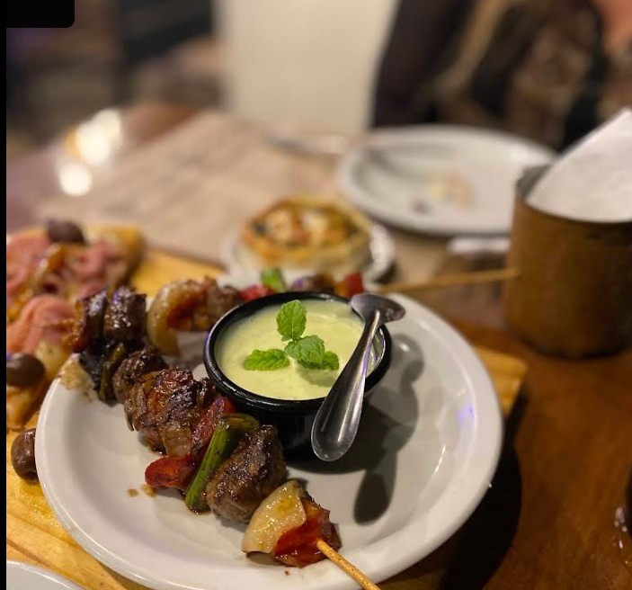
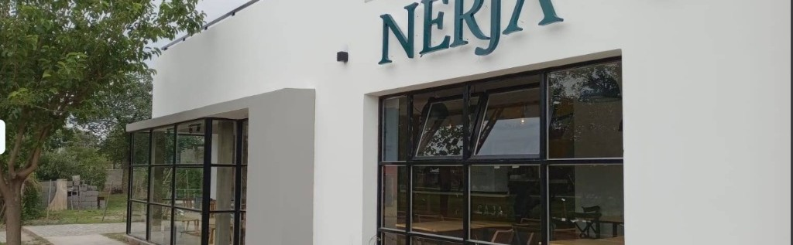

I
Mañana
Tostadas, huevos revueltos sobre palta, jugo exprimido y un café con leche que pide quedarse un rato más.

Restaurante & Cafetería
Costanera de Cruz del Eje, Córdoba.
Del primer café a la última copa.
— Nuestra casa
Una casa blanca frente a la costanera, donde el café de la mañana y la cena de la noche se cocinan con la misma calma: productos frescos, platos abundantes y medialunas que salen de nuestro propio horno.
01 — Del día a la noche

Tostadas, huevos revueltos sobre palta, jugo exprimido y un café con leche que pide quedarse un rato más.

Cocina casera y generosa: pollo, papas doradas, lentejas salteadas con cebolla y un huevo a caballo.

Medialunas elaboradas por nosotros, tartas tibias y buen café, con la luz de la tarde entrando por los ventanales.

Brochettes de carne y vegetales, salsa de la casa y una mesa larga para compartir bajo las luces cálidas.
Y vuelta a empezar
mañana temprano.
02 — La casa en 360°
Arrastrá o deslizá para girar


03 — Para el final
“Las medialunas estaban exquisitas. Se nota que son muy caseritas.”
— Febe, reseña en Google
04 — Lo que dicen
“De Cruz del Eje, el mejor lugar para cenar. Es la tercera vez que vengo con mi pareja y la comida es un lujo. Platos muy abundantes.”
“Lindo lugar en la costanera para merendar. Buena calidad, rico café y precios súper bien. La atención de los chicos, excelente.”
“Un excelente lugar para ir a comer. Pequeño pero cómodo y bien ambientado. Para cenar está excelente.”
“La comida sencilla y sabrosa, se nota fresca. Sin espera y con un ambiente donde se puede conversar.”

05 — Visitanos